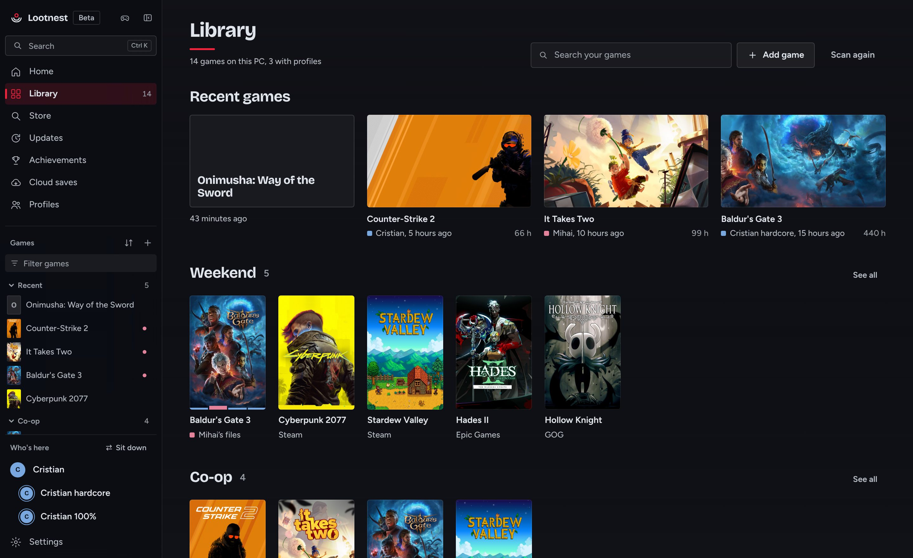
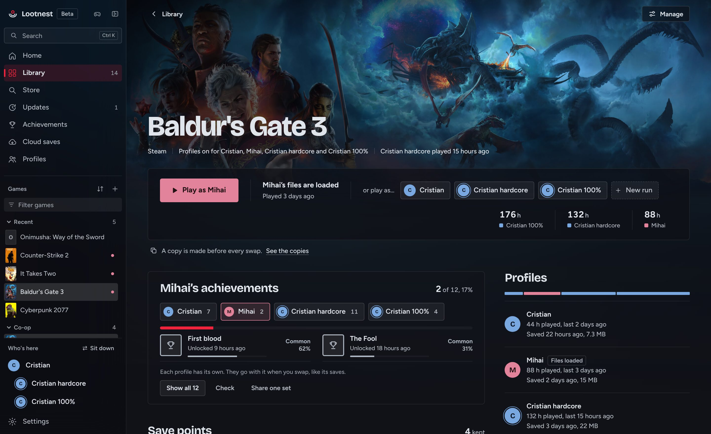
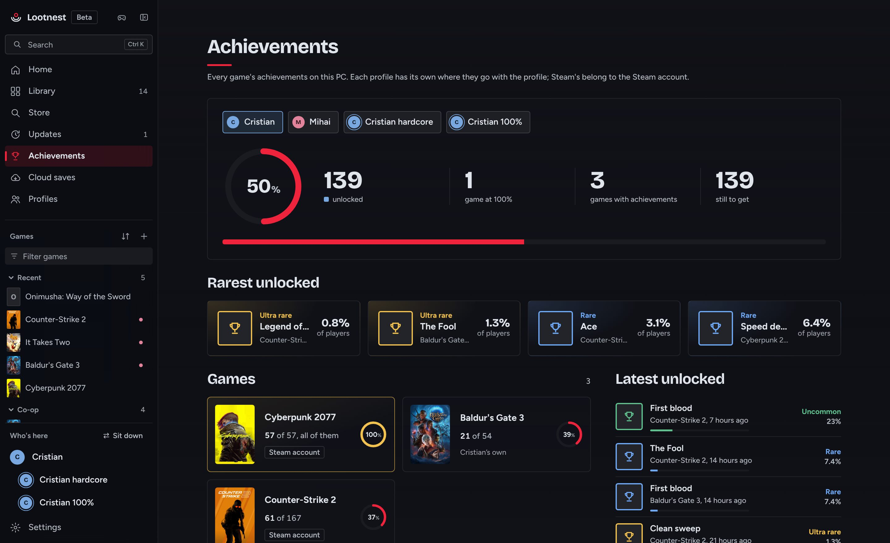
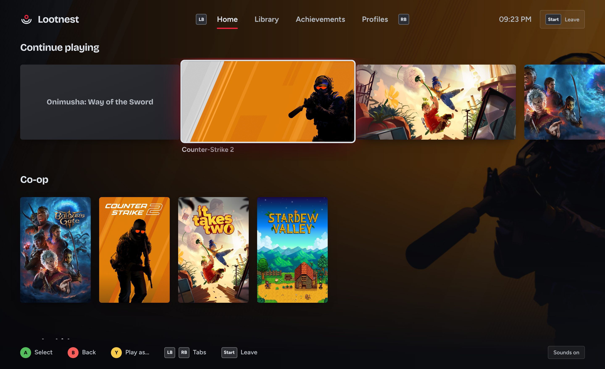

Keep every save.
Lootnest puts every game on your PC in one library and copies your saves before anything changes them. Keep runs of a game, a hardcore try or a new game+, each with saves of its own. Share the PC, and everyone gets theirs.
Free, with no account. Windows 10 and 11. In beta.
Baldur's Gate 3
%LOCALAPPDATA%\Larian Studios\Baldur's Gate 3
No copies yet
- Latest save
- Act 3, Lower City
- Difficulty
- Balanced
- Controls
- Mouse, sensitivity 1.2
- Display
- 2560 × 1440, Ultra
- Achievements
- 7 of 54
Cristian's files are loaded.

It finds games from Steam, Epic, GOG, Xbox and PC Game Pass, EA, Ubisoft, Battle.net, Riot, Amazon, Rockstar, itch.io, Hydra, your shortcuts and game folders on every drive.
Runs, each with its own saves
Lootnest starts with one profile: yours. On any game's page, New run starts another playthrough with saves and settings of its own. Start it from nothing, or from a copy of where you are now. Your main saves stay exactly as they were.
Switch runs from the game's page. Each keeps its playtime, its achievements, and a status: playing, up next, finished, 100% or dropped.
Sharing the PC? Add a profile for each person, and Play asks who's playing. Everyone keeps their own sensitivity, keybinds and saves on one Windows account and one Steam account.

What happens when you press Play
The game itself is never touched. Lootnest only moves the files a game keeps your saves and settings in, and copies them first.
The files on the PC go home
Whatever is in the game's save folders now is saved back to the profile it belongs to.
A copy is made
Those files are copied to Lootnest's backups, and every copy is read back before anything is replaced.
Your files go in
The profile you chose has its saves and settings put in place. A swap cut short is finished the next time Lootnest starts.
You play
The game starts as it always does. Lootnest waits in the tray and watches for it to close.
Your progress is kept
When the game closes, what you played goes back to your profile, ready for next time.
Steam Cloud can stay on. Each game says whether Steam Cloud syncs the files it swaps. If Steam ever replaces a profile's files with the cloud's copy, Lootnest says so on the game's page and keeps the profile as it was.
Any copy can go back. Every copy made before a swap is listed on the game's page, with whose files it holds. Put one back in one click; what's there now is copied first.
For games from outside the stores
Games in a folder, DRM-free, portable or added by hand get the same care as the rest, and a few things of their own.
A safety net for saves in the game's folder
Some games keep their saves next to the game. Lootnest copies them whenever they change, so deleting or reinstalling the folder doesn't take them with it.
Save points
A named copy of your saves, "Before the boss", from the game's page or with Ctrl Shift F5 while you play. Go back to any of them, or start a new run from that moment.
Achievements, read from the PC
Lootnest reads the achievement files Steam-compatible tools leave on the PC, keeps them per profile, and shows a note over the game when one unlocks, with how rare it is.
Updates you bring, with Undo
Lootnest says when a newer version is out. Apply an update you have, a folder, an archive or an installer: your saves and every replaced file are copied first.


From the sofa
Press Start on a controller, or F11, and Lootnest fills the screen like a console: your games in rows, a screen for each, and Play as whoever's sitting down.
Nothing goes online unless you turn it on
No account, no telemetry, and it works offline. Cloud saves go to your own OneDrive, Google Drive or Dropbox folder, encrypted on your PC first if you set a password.
Lootnest never downloads games or updates, never changes how a game starts, and never touches a game's memory. Games with an anti-cheat get no notes over them.
Off until you turn it on
- Covers and artwork
- A game's name, to the Steam store
- The Store and prices
- What you search for, to Steam and CheapShark
- How rare achievements are
- A game's Steam id, for Steam's public numbers
- Game news and updates
- A game's Steam id, for its patch notes
- Save locations list
- Nothing about you: a list from PCGamingWiki
- Lootnest updates
- Asked once, then a version check to GitHub
Questions
Is it free?
Yes, and the code is open under the MIT license. There's no account, no subscription and nothing to unlock for keeping your saves safe.
Does it change my games?
No. Lootnest moves only the files a game keeps its saves and settings in, and copies them first. It doesn't patch, inject into or read the memory of any game.
What if I use Steam Cloud?
Keep it on. Each game says whether Steam Cloud syncs the files Lootnest swaps. If Steam replaces a profile's files, Lootnest tells you and keeps the profile as it was.
What about games with an anti-cheat?
Lootnest never touches the game's own files, swaps only its settings and saves, and shows no notes over it. For FACEIT, one click lets Steam start the game instead.
Windows says it protected my PC.
Lootnest isn't code-signed yet, so SmartScreen asks. Choose More info, then Run anyway. The installer needs no administrator rights.
Can I try it on games I care about?
It's in beta. A copy is made before every swap, but start with a game whose saves you could lose, and see the checklist in docs/TESTING.md.